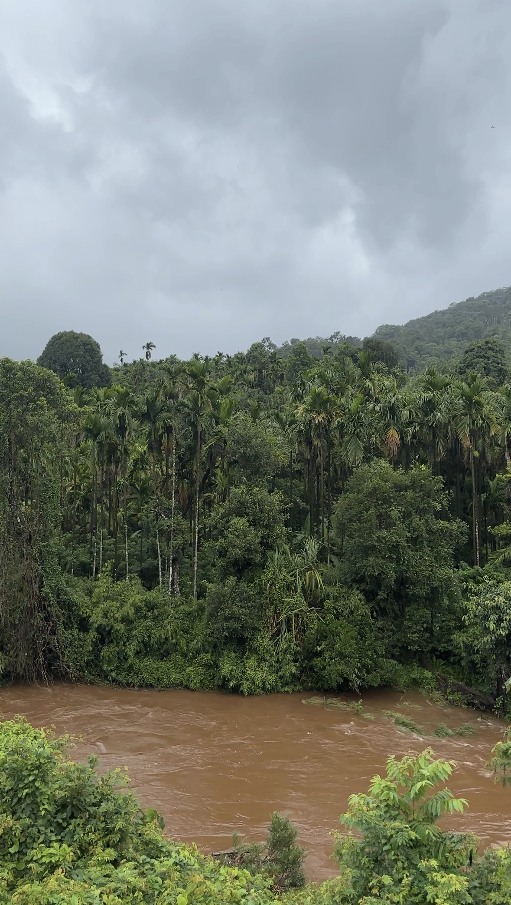
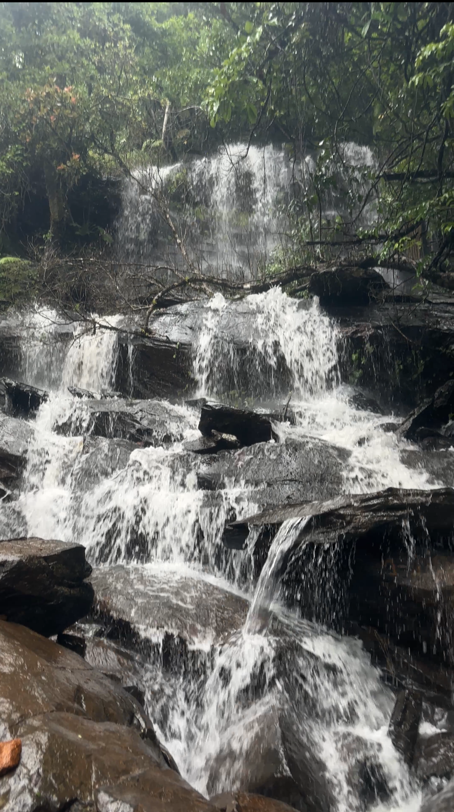
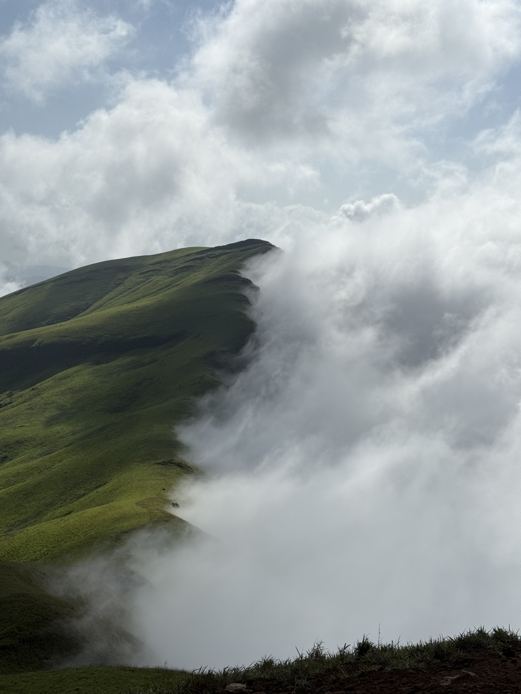
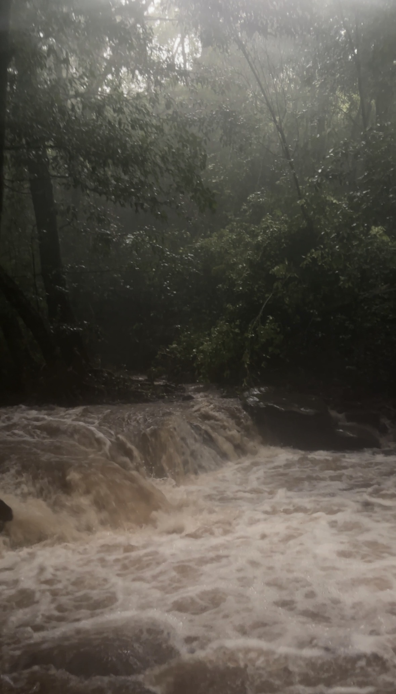

Where the River
Begins
June in the Western Ghats is not for the faint-hearted. The trails are alive — wet, green, loud with rain and insects and the sound of water running where there was no water before. Everything is slippery. Everything is saturated. And everything is the most unreal shade of green you have ever seen in your life.
Netravathi Peak sits above Samse, a small base that you reach before the world is properly awake. The air already smells like wet earth and something floral you can't name. The mist moves through the trees like it has somewhere to be. You adjust your straps and you start walking.


The trail climbs steadily. Not brutal — but the kind of climb where your legs notice the grade before your brain does. The forest is thick at first, then slowly, with altitude, it starts to open. And when it opens, you stop walking.
The grass on either side of the trail is carrying the monsoon. Each blade holds a row of water droplets, perfect and round, catching whatever thin light exists. They look like pearls strung on green thread. You know you should keep moving. You stand there anyway.
Then you hear it — or rather, you see it before you hear it. A deer, at the edge of where the forest meets the open ridge. A silhouette. It stands still long enough for you to look, and then it doesn't.
The Western Ghats does something that high Himalayan trails don't — the false peaks. You think you see the summit. You reach it. There is another ridge ahead. You climb that too. There is another one. It keeps doing this until you stop trusting your eyes entirely and just walk. It's almost funny, except your quads don't think so.

The Bande Kalu Waterfalls appears quietly along the trail, almost hidden within the forest. You hear it long before it comes into view — the roar of water crashing against the rocks growing louder with every step. As you get closer, a white sheet of water pours down the rock face with incredible force, the cold spray reaching your face before you even stand beside it. From there, the trail continues through dense forest, slippery boulders, and drenched boots, carrying you deeper into the wild until you finally find yourself standing above streams rushing beneath your feet.
As the dense forest slowly begins to open up, the trail leads you to the first flowing streams of the Netravathi River. The water here feels unbelievably pure — cold, fresh, and filled with minerals carried down through the mountains, rocks, and forests. After tasting it, even bottled water starts to feel artificial. Standing beside the stream, you begin to understand why both the river and the peak share the name Netravathi. This is where the river is born — emerging quietly from the rain-soaked land, the stone, and the endless greenery surrounding it. To continue the trail, trekkers cross the icy current with the help of a single rope stretched across the stream. One hand holds the rope tightly while the other searches carefully for stable footing on the slippery rocks beneath the water. The current is cold enough to make you pause, but the experience feels unforgettable. Surrounded by mist, flowing water, and the silence of the mountains, you can truly feel that this is not just another stream crossing — this is the birthplace of the Netravathi.
The river you have seen running through cities, under bridges, past temples — it starts here. In a cleft of wet rock on a monsoon morning, thin and clear and cold. This is where it begins.

At the top, there are no dramatic rock faces or prayer flags or summit markers with altitude. There is just grass. Rolling, open, impossibly green grassland in every direction. The mist comes in and out of it like something breathing. When the clouds break, the Western Ghats drops away into the distance — ridge after ridge, green fading to blue fading to nothing.
You could be anywhere. You could be nowhere. It feels more like a dream than a mountain. You walk through it slowly, like you're afraid of waking something up.
From Netravathi Peak, you can witness a stunning panorama of the Western Ghats, including peaks like Kudremukh,Kyatanmakki,Bandaje,Ranijhari, Ballalarayana Durga Fort,Yethina Bhuja, Gadaikallu (Jamalabad Fort),and Kumaraparvatha.

Many say the climb is the hardest part of a trek. But anyone who has descended a rain-soaked Western Ghats trail during the peak monsoon in June knows otherwise.
Summer and rain together turn the mud into something with no friction at all. One wrong step and you are not trekking anymore — you are sliding. Free. Unplanned. The trail becomes something Wonderla has probably patented. I skidded on one of these sections and landed in a full Spiderman pose — both hands splayed, one knee down, completely spread-eagled on a muddy slope. I stayed there for a moment. The mountain did not comment.
There is a technique for this. We call it penguin walk. You turn sideways and take small deliberate steps — side-stepping, traversing the slope instead of going straight down it. One conscious step, then the next. You move like a penguin, slowly and without dignity, and you don't fall. It works. It is not glamorous. It works.
In monsoon and summer conditions, the descent is the real danger on Western Ghats trails. Use penguin walk — side-step traversal, small steps, never hurry downhill on wet grass. Full body awareness the whole way. Trekking poles help enormously.
The interesting thing about descending — the trail looks like a completely different path. What you climbed feels unfamiliar coming down. The angles change, the light hits differently, and the green grasslands catch you again from a new direction. It doesn't feel like the same walk. That part is a gift.
We made our way back down to the Netravathi river crossing, now glowing softly under the lower evening sun. This time, we stopped for a while — refilling our water bottles, sitting quietly on the rocks, and enjoying lunch beside the flowing stream. After hours of trekking, it was one of those rare moments where the body feels exhausted but the mind still lingers somewhere high in the mountains. The river continued to flow beside us, steady and peaceful, becoming the only sound that truly mattered in that moment.
Then back through the forest, back to Samse. Quiet all the way. The kind of tired that doesn't need to say anything.